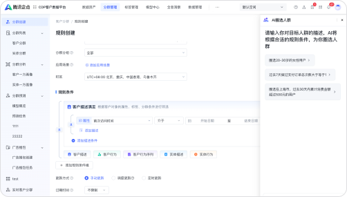
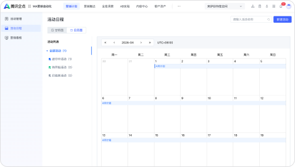
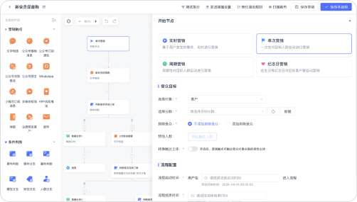
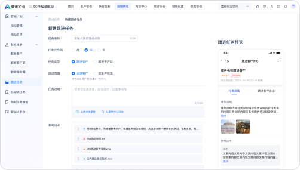
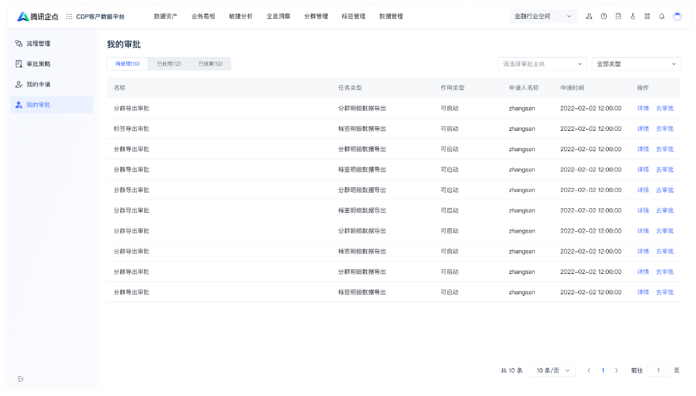
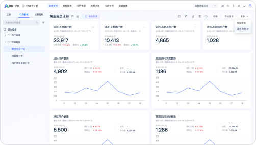

目标用户
品牌方会员运营
5 年经验 · 让每次大促更准、更省力
传统 SAAS 产品体验旅程
体验审计：编排期 → 执行期 → 复盘期，跨越 7 个业务环节
5 年经验 · 让每次大促更准、更省力

人群圈选认人、打标签
活动策划定目标与策略
旅程编排配置触点规则
内容生成准备触达素材
审批发布核对并提交
效果复盘看报表、做判断不用在每个工具里把业务目标重新翻译一次。
人群、策略和渠道约束在交接时继续传递。
确认和调整留下来，下一场不用从头解释。